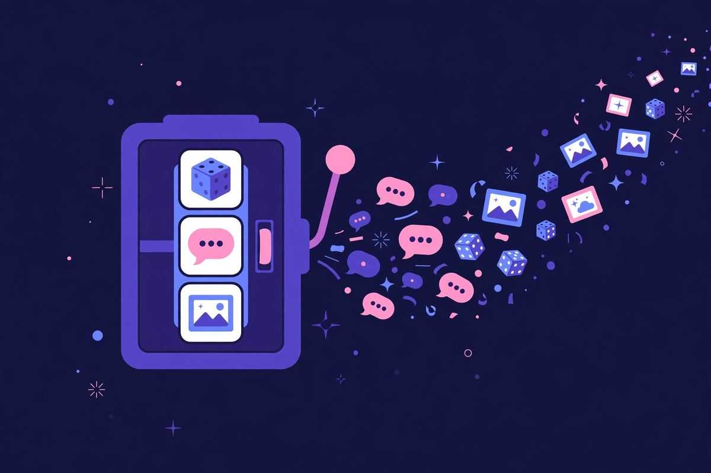
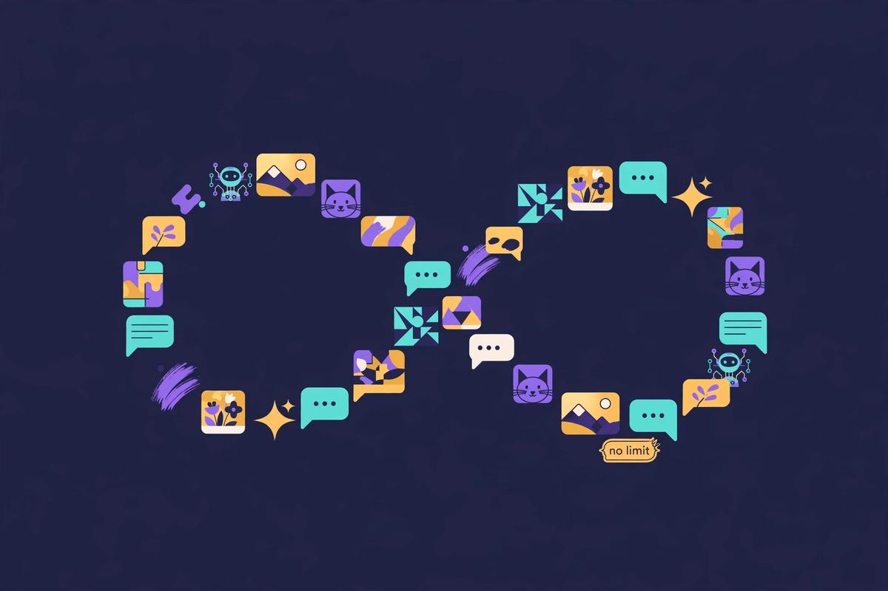

Perchance AI Review: Free, Unlimited, No Sign Up
Perchance is the cockroach of free AI — in the best way. While every other "free" AI tool adds signup walls, credit systems, and paywalled tiers, Perchance just keeps being free, unlimited, and account-free. AI character chat, image generation, random generators of every description. No account, no email, no limits I could find. I stress-tested the "unlimited" claim so you don't have to.
| Verdict | 8/10 — the most generous free AI on the internet |
|---|---|
| No sign up? | Yes — no account system exists |
| Price | Free, ad-supported, no limits found |
| Best for | Character chat, casual image generation, endless experimenting |
| Watch out for | Models aren't frontier-tier; ads; interface is scrappy |

What is Perchance?
Perchance (perchance.org) started years ago as a random-generator website — the kind of place with "random superhero name" tools. Then AI happened, and Perchance bolted on AI character chat and text-to-image generation, keeping the same philosophy: everything free, no account, supported by ads.
The result is one of the last truly unlimited AI playgrounds. Not "free with 100 credits." Not "free until you hit the paywall." Just... free. The business model is ads, and the site doesn't hide it. That honesty is the whole review, really — but let's get specific.
Is "unlimited" actually real?
This was my main test, because "unlimited" is the most abused word in free AI. I chatted for over twenty minutes straight, generated a dozen images in one sitting, and never saw a counter, a queue warning, or a "create account for more" nudge. No rate-limit message, no slowdown designed to push registration.
Caveat: "unlimited" means unlimited within fair shared use. If you hammered the servers with a bot, you'd presumably get throttled — that's just physics. For any human using it normally, including heavily, I found no ceiling. Compare that to the industry standard of 5-messages-then-register, and Perchance feels like it's from another era.

AI character chat: the main event
Perchance's character chat is its most popular feature — thousands of user-created characters to talk to, plus the ability to create your own. Anime characters, original personas, roleplay scenarios. No account needed to chat with any of them.
Quality-wise, let's be straight: the underlying models aren't GPT-4 or Claude. Conversations are fun and surprisingly coherent for casual roleplay, but you'll notice the difference if you're used to frontier models — shorter memory, occasional repetition, less nuance. For entertainment, brainstorming, and creative writing prompts, it's plenty. For serious work, use Duck.ai instead. Different tools, different jobs.
One thing Perchance does better than the polished alternatives: it doesn't moralize at you. The content filters are lighter than mainstream chatbots, which is part of why the roleplay community loves it. I'm not going to editorialize beyond that — you know what you're looking for.
Practically speaking, the character creator is where Perchance stops being a toy. Writers use it to test dialogue — put two characters in a scene and see how they talk. Language learners use it for conversation practice without the embarrassment of a human tutor. None of this requires an account, which means the barrier between "I have an idea" and "I'm testing it" is about ten seconds. That speed matters more than model quality for creative work.
Image generation: good enough and endless
The text-to-image generator is solid for a free tool — not Pollinations-level, but perfectly usable for memes, concept art, profile pictures, and "what would this look like" experiments. I ran it through the same test prompts as our image generator roundup and it held its own for casual use.
The real advantage is volume: generate 50 variations of a prompt without thinking about credits. That changes how you use it — instead of carefully crafting one perfect prompt, you iterate freely. For creative exploration, unlimited mediocre generations beat 5 precious ones.
Limits and catches
- Ads: the site is ad-supported and doesn't hide it. They're not aggressive, but they're there. This is the entire business model — respect it.
- Model quality: not frontier-tier. Fun and capable, not cutting-edge.
- Interface: scrappy. This is a site built by someone who cares about function over polish. It works, it's just not pretty.
- No history/sync: no account means nothing follows you across devices.
That's the whole list. No paywall, no credits, no watermark, no "pro" tier nagging. I've reviewed a lot of free AI tools; this is the shortest catches section I've ever written.
Perchance vs the alternatives
Against Character.AI (the big name in character chat): Character.AI requires an account and has gotten more restrictive over time. Perchance requires nothing and stays loose. Model quality goes to Character.AI; freedom and friction go to Perchance.
Against Craiyon (our other "fun unlimited" pick): Craiyon is images-only and simpler. Perchance does chat and images plus the whole generator ecosystem. If you only want quick images, Craiyon's fine. For everything else, Perchance.
Against Duck.ai: not really competitors. Duck.ai is for good answers privately; Perchance is for play. I have both bookmarked.
FAQ
Is Perchance AI really free with no sign up?
Yes. No account system exists on the site. I used character chat and image generation extensively with no registration, no email, nothing.
Is Perchance actually unlimited?
In my testing — 20+ minutes of chat, a dozen images in one session — I hit no limits, counters, or throttles. It's ad-supported, which is how "unlimited" stays free.
Is Perchance safe?
It's a well-established site that's been around for years. Standard advice applies: don't share personal information in any AI chat, and remember conversations aren't private in the Duck.ai sense — there's no account, but the service still sees your traffic.
Can I create my own AI character?
Yes — character creation is free and account-free too. Define a persona, set the greeting, share it or keep it to yourself.
Why is it free? What's the catch?
Ads. That's genuinely it. No premium tier to upsell you into, no data harvesting scheme I could find — just a site that runs on ad revenue and keeps the AI free.
Perchance vs Character.AI — which is better?
Character.AI has better models and a bigger character library, but requires an account and has tightened content rules over time. Perchance is free-er in every sense: no account, lighter filters, unlimited use. If you want the best AI roleplay quality and don't mind registering, Character.AI. If you want zero friction, Perchance.
Verdict
Perchance is the most generous free AI deal on the internet right now, and it's not close. Unlimited character chat, unlimited image generation, no account, no credits, no paywall psychology. The models aren't the best and the site isn't the prettiest, but the deal is unbeatable.
8/10. If Duck.ai is the serious pick, Perchance is the fun one — and sometimes fun is the whole point. Browse the rest of our tested no-signup directory here.
Open perchance.org — no sign up →
Tested 2026-10-11 · Providers change their signup policies — we re-verify regularly.